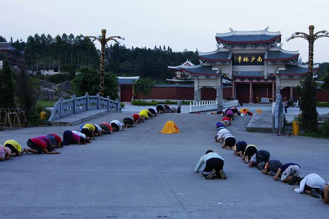

露从今夜白，月是故乡明。
谁家玉笛暗飞声，散人春风满洛城。此夜曲中闻折柳，何人不起故国情。
莆田简介
莆田，福建省辖地级市，古称“兴化”，又称“莆阳”、“莆仙”， 境内地势西北高、东南低，横剖面呈马鞍状，地处北回归线北侧边缘， 东濒海洋，属典型的亚热带海洋性季风气候；截至2018年，辖1个县、4个区， 总面积4200平方公里；常住人口290.0万人。
莆田市历史底蕴深厚，史称“兴化”，素有“海滨邹鲁”、 “文献名邦”之美称，自唐以来，涌现出2482名进士、21名状元，17名宰相。 同时，莆田被列为第一批国家新型城镇化综合试点地区，及消费品工业“三品”战略示范城市。 2018年10月，获得“国家森林城市”荣誉称号。
地理位置
莆田市地理位置优越。位于福建省沿海中部，台湾海峡西岸， 北依省会福州市，南靠闽南“金三角”，是沿海经济开放区之一。 全市东起东经119°2’的莆田县南日群岛，西至东经118°27’的仙游县度尾镇境内， 南自北纬25°2’的湄洲群岛，北到北纬25°46’的莆田县大洋乡境内。东西长122.4公里， 南北宽80.5公里，面积3800平方公里。东北与福清市交界，西北与永泰县、德化县毗邻， 西南与永春县、南安市、惠安县接壤，东南濒临台湾海峡。从东至南有兴化湾、平海湾、 湄洲湾三大海湾，湾内有南日岛、乌土丘岛、湄洲岛等诸多岛屿，与台湾省隔海相望，距台中港仅70多海里。
人口分布
截至2019年底，年末常住人口291万人，比上年末增加1万人。 其中，城镇常住人口179.5万人，占总人口比重（常住人口城镇化率）为61.7%， 比上年末提高0.7个百分点。全年出生人口3.8万人，出生率为13.0‰；死亡人口1.9万人， 死亡率为6.5‰；自然增长率为6.5‰。年末户籍人口数为363.5万人，比上年末增加3.24万人。 市内居住有汉族、畲、壮、苗等33个民族。
莆田欣赏
九龙谷
九鲤湖

平海
南少林
湄洲岛